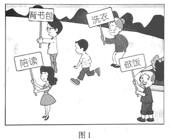
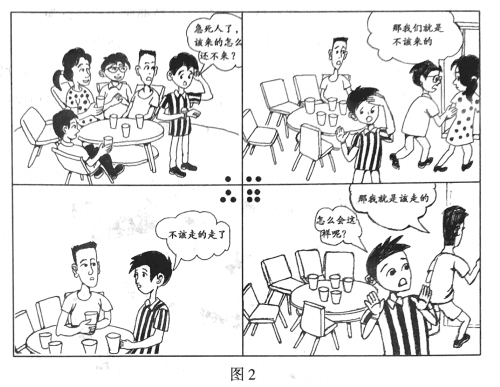

2018年北京市中考政治试题 · 选择题 第6、7、8、9、10题
依托“墨子号”量子科学实验卫星,我国某量子研究团队实现了多项世界领先的量子通信技术突破。回答第3、4题。
6.图1漫画给我们的启示是

A.应该告别依赖,走向自立
B.家长为孩子包办代替理所应当
C.做到自立，就要拒绝别人的帮助
D.学生的唯一任务是学习,不必洗衣做饭
7. 2018年6月,北京市防汛抗早指挥部公布了致广大市民的一封信,提醒市民:外出遇到暴雨时,注意防汛安全警示标志,就近寻找安全避险场所；骑车人员在遇到道路积水时。应下车推行,注意观察,绕开有水流漩涡的地方……根据提示,中学生外出遇到暴雨时应
①提高防范意识，注意警示标志 ②注意观察雨情,领导抗洪救灾
③检查公共设施,组织人员疏散 ④采取恰当措施，注意自身安全
A.①② B.①④ C.②③ D.③④
8.每个人的生活都需要友情的滋润。“海内存知己,天涯若比邻”是唐朝诗人王勃描写友情的名句。下列选项中与其寓意相近的是
A.劝君莫惜金缕衣,劝君惜取少年时
B.两岸猿声啼不住,轻舟已过万重山
C.桃花潭水深千尺,不及汪伦送我情
D.等闲识得东风面,万紫千红总是春
9.

图2漫画给我们的启示是
①口头表达容易引发误会,应改用书面表达方式
②人与人之间的误解都源于语言不文明
③朋友间交往应该彼此理解、相互包容
④说话要考虑他人感受,避免引发不必要的误会
A. ①② B. ①③ C.②④ D. ③④
10.小勇不小心撞坏了同学的眼镜。从负责任的角度看,对下列做法评价正确的是
| 做法 | 评价 |
A | 当场赔礼道歉 | 不是故意的,道什么歉 |
B | 与被撞同学商量赔偿问题 | 同学之间不必这么计较,不用赔 |
C | 告诉父母事情的经过 | 咱们是未成年人,所有的事都应该由父母负责 |
D | 对被撞同学给予赔偿 | 賠偿是对的,这是以实际行动弥补自己的过错 |